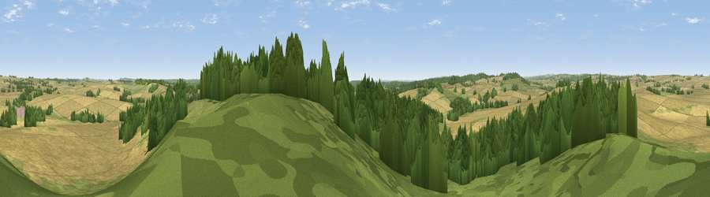

Damerham Knoll
#19588 in England · top 18% of its area beats it · near RockbourneThe view, rendered

A 360° render of this exact spot computed from the terrain model, tree cover and land cover — summer colours, afternoon light, calibrated against photographs of famous viewpoints. Real trees, hedges and buildings will differ in detail.
The panorama
Grey silhouette: terrain skyline in each direction (720 bearings, Earth curvature and refraction included). Dashed green: skyline with trees (+15 m) and buildings (+8 m) as obstacles. Blue strip: how far the ground is visible on each bearing.
Where the view opens
Wedge length = distance to the farthest visible ground on that bearing (vegetation-aware). Rings at 10, 25 and 50 km.
What fills the view
51% cropland · 31% woodland · 17% grassland
Angular shares of the visible panorama (visual magnitude), not map area. Landscape diversity 0.45 (0–1 Shannon).
Key numbers
More beautiful places nearby
The staircase of upgrades: each row has a higher view potential than everything closer. Driving times are estimates from straight-line distance, calibrated against real road routing — check an actual route before setting out.
| Place | Direction | Drive | Score |
|---|---|---|---|
| Viewpoint near Martin | WSW · 5 km | ~12 min | 64.6 |
| Viewpoint near Cranborne | WSW · 6 km | ~13 min | 65.0 |
| Trow Down | WNW · 13 km | ~24 min | 67.5 |
| Monk's Down | W · 16 km | ~29 min | 74.4 |
| Viewpoint near Berwick St John | W · 17 km | ~30 min | 78.2 |
| Viewpoint near Studland | S · 38 km | ~57 min | 80.9 |
| Viewpoint near Studland | S · 38 km | ~57 min | 82.2 |
| Ballard Down | S · 38 km | ~57 min | 83.2 |
50.96741, -1.86359 · source: dobih hill · position refined by local search. Computed location — check access rights before visiting.